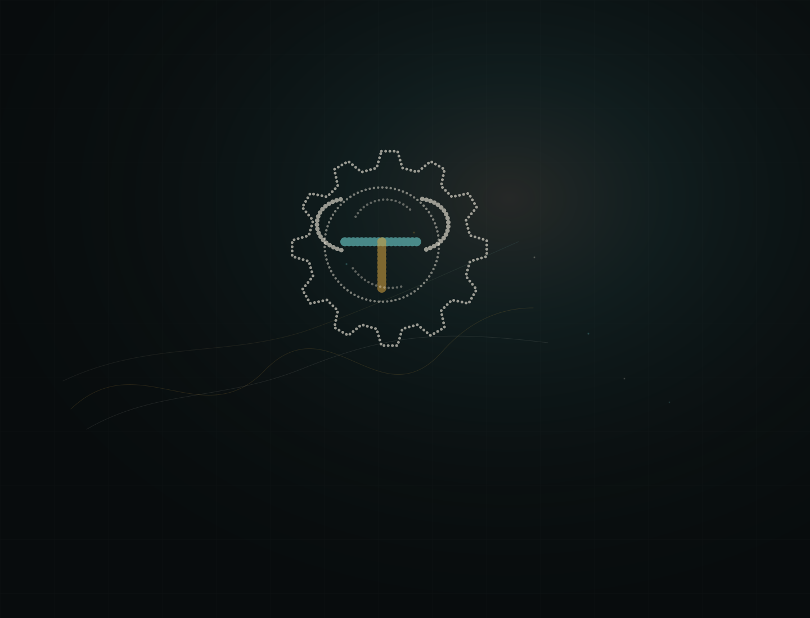
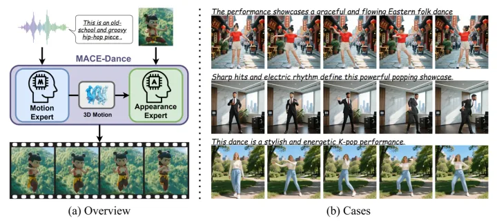
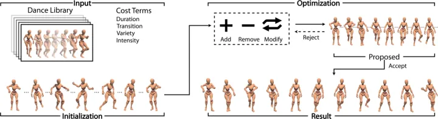
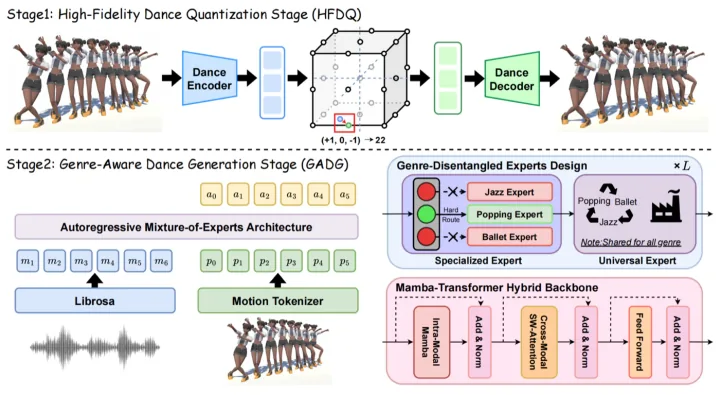

Capture
Music, pose, image, and interaction traces enter as movement material.

Nonprofit research in dance, computation, and XR.
Research Method
Music, pose, image, and interaction traces enter as movement material.
Temporal structure and kinematics are shaped into a readable motion field.
Dance phrases, group coherence, and appearance move through specialized model paths.
Generated movement is inspected through papers, prototypes, and spatial experiments.
Publication Evidence

SIGGRAPH 2026 / Motion + Appearance

IEEE VR 2026 / XR Motion

NeurIPS 2025 / Mixture of Experts
Mission
MalouTech operates as a nonprofit research company. The lab publishes papers, shares project artifacts when possible, and collaborates with partners who care about transparent evaluation.